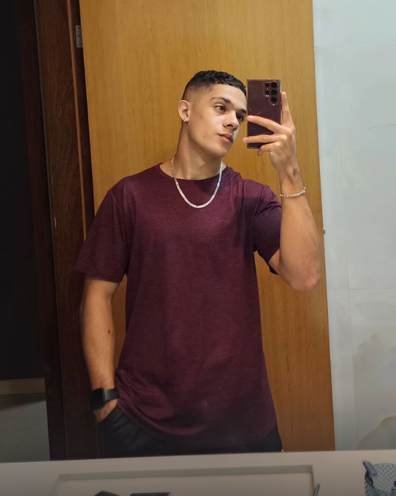

Estudante de Ciência da Computação · UNICEUB · 2026
Atleta semiprofissional de futebol, apaixonado por tecnologia e esportes. Atualmente no primeiro semestre de Ciência da Computação, desenvolvendo habilidades em programação e análise de dados, com foco em construir uma carreira sólida na área de tecnologia.

Desenvolvimento de exercícios de lógica computacional utilizando pseudocódigo como parte da grade curricular do 1º semestre de Ciência da Computação na UNICEUB. Foco em estruturas de decisão, repetição e decomposição de problemas.
Curso de programação em Python em andamento na plataforma Udemy. Cobre variáveis, tipos de dados, estruturas de controle, funções e introdução à manipulação de listas e dicionários. Aplicação prática com mini projetos ao longo das aulas.
Desenvolvimento do portfólio digital pessoal como entrega do desafio inicial da disciplina, utilizando HTML, CSS e boas práticas de estruturação de conteúdo. Primeira experiência prática com desenvolvimento web.
À medida que avanço na graduação e nos cursos livres, novos projetos serão adicionados aqui — incluindo automações em Python, análise de dados esportivos e aplicações web completas.
O Vinicius é um jovem de caráter sólido, altamente disciplinado e comprometido com tudo o que faz. Sua trajetória como atleta semiprofissional demonstra não apenas talento, mas também dedicação, resiliência e capacidade de trabalhar em equipe sob pressão. Tenho plena confiança de que ele traz essas mesmas qualidades para o ambiente acadêmico e profissional. É um prazer recomendar o Vinicius para qualquer oportunidade que exija comprometimento e vontade de crescer.